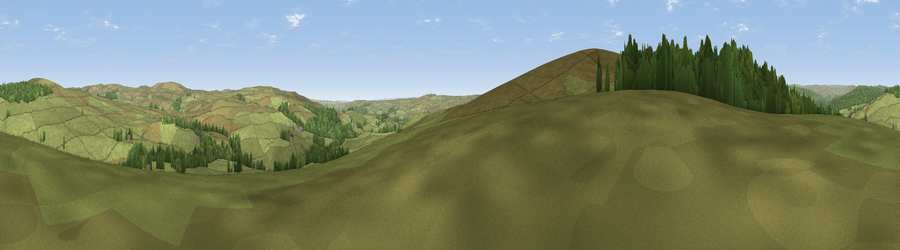

Viewpoint near Greenhaugh
#31146 in England · top 69% of its area beats it · near GreenhaughWhere it is
The exact computed spot (NY 78025 88225). Click the marker for map links.
The view, rendered

A 360° render of this exact spot computed from the terrain model, tree cover and land cover — summer colours, afternoon light, calibrated against photographs of famous viewpoints. Real trees, hedges and buildings will differ in detail.
The panorama
Grey silhouette: terrain skyline in each direction (720 bearings, Earth curvature and refraction included). Dashed green: skyline with trees (+15 m) and buildings (+8 m) as obstacles. Blue strip: how far the ground is visible on each bearing.
Where the view opens
Wedge length = distance to the farthest visible ground on that bearing (vegetation-aware). Rings at 10, 25 and 50 km.
What fills the view
80% grassland · 20% woodland
Angular shares of the visible panorama (visual magnitude), not map area. Landscape diversity 0.23 (0–1 Shannon).
Key numbers
More beautiful places nearby
The staircase of upgrades: each row has a higher view potential than everything closer. Driving times are estimates from straight-line distance, calibrated against real road routing — check an actual route before setting out.
| Place | Direction | Drive | Score |
|---|---|---|---|
| Viewpoint near Greenhaugh | WSW · 1 km | ~3 min | 66.8 |
| Viewpoint near Greenhaugh | NNE · 2 km | ~6 min | 68.3 |
| Viewpoint near Greenhaugh | ENE · 5 km | ~11 min | 70.4 |
| Padon Hill | NE · 6 km | ~13 min | 72.6 |
| Blackman's Law | NNW · 10 km | ~20 min | 74.1 |
| Monkside | NW · 12 km | ~22 min | 78.4 |
| Deadwater Fell | WNW · 18 km | ~31 min | 79.4 |
| Viewpoint c11995_7247 | NW · 19 km | ~33 min | 82.1 |
55.18781, -2.34667 · source: screening · position refined by local search. Computed location — check access rights before visiting.